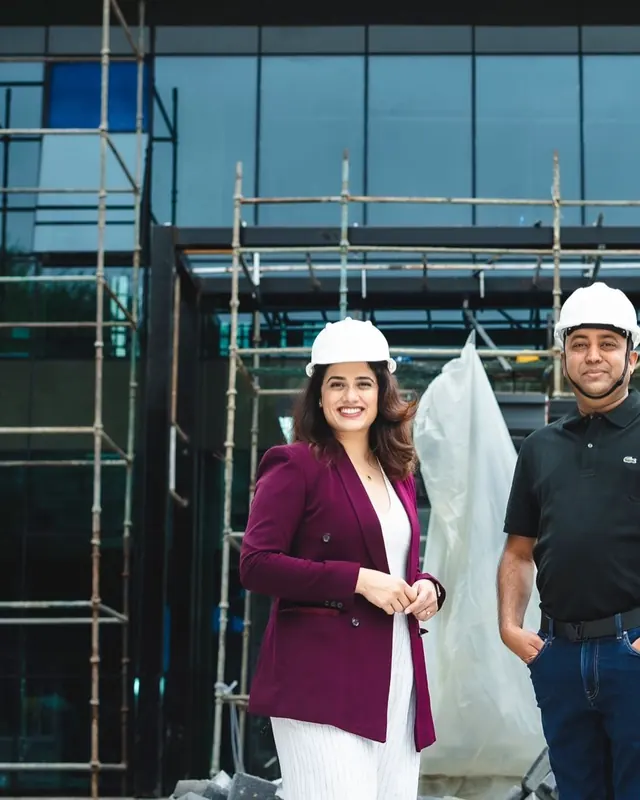
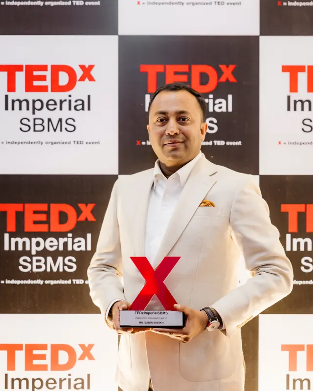

Why I write every decision down before I make it
A one-page note before any big call. It slows me down by a day and has saved me from more bad deals than any adviser.

A curious mind.
A purposeful life.
Founder of SAVIANS Group. Essays on the blog, long conversations on the podcast, and the day-to-day on Instagram.
Success isn’t only about building businesses. It’s about building people, and creating opportunities for them.
It was drawn as a logo. It turned into a set of rules. Keep scrolling and I'll walk you through them.

Sabir Salim Shaikh is the founder, chairman and managing director of SAVIANS Group, based in Pune. The group works across architecture, interiors, branding, construction and project execution, and employs more than 2,000 people.
He learns the way most good operators do: from the people he meets, the places work takes him and the ideas he tries out. Away from the site, you'll find him on horseback or at the shooting range.
SAVIANS Group puts architecture, interiors, branding and construction at the same table from the first day of a project. Each link opens the company's own site.
What I've learned about business, people and the world around me. One idea per piece, and nothing I haven't tried myself.
A one-page note before any big call. It slows me down by a day and has saved me from more bad deals than any adviser.
Long conversations about building SAVIANS, the people behind it, and what the work has taught me along the way.

Latest conversation
With actor Girija Oak. Building SAVIANS, the lessons along the way, education, and staying grounded while you build for the future.
Interviews, talks and recognition, and the occasional story from along the way.

TEDx Imperial SBMS, 24 October 2026
At Aurum, The Auditorium, Sabir talked about the belief that has shaped how he leads: success isn’t only building businesses, it’s building people and creating opportunities for them.
See the talk on InstagramSite visits, talks, travel and the odd day off. Follow along for the parts that don't make it into an essay.
Always open to a good conversation. Business proposals, speaking invitations, podcast guests and press: every message is read.
hello.sabirshaikh@gmail.com